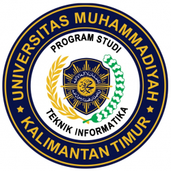

-
Prodi
Programme
S.Kom. (Informatics)
Program Studi S1 Teknik Informatika UMKT adalah salah satu program studi yang dimiliki oleh Universitas Muhammadiyah Kalimantan Timur dan berada pada Fakultas Sains dan Teknologi. Didirikan pada tahun 2017, dengan dasar hukumnya No. 463/KPT/I/2017 tanggal 28 Agustus 2017 yang diterbitkan oleh Menteri Riset, Teknologi dan Pendidikan Tinggi RI. Merupakan penggabungan dari STIKES (berdiri 1 September 2009) dan STIE (berdiri 28 Februari 1983), yang didukung oleh UMS berdasarkan kesepahaman antara BPH UMS, BPH Stikes dan BPH STIE. Pada tahun 2020, Prodi S1 Teknik Informatika telah terakreditasi C dengan SK BAN-PT No. 6273/SK/BAN-PT/Akred/S/X/2020. Lulusan prodi S1 Teknik Informatika memiliki gelar Sarjana Komputer (S.Kom).
 Visi Prodi S1 Teknik Informatika
Menyelenggarakan pembelajaran secara profesional dan inovatif dengan menerapkan model pembelajaran aktif berbasis teknologi informasi serta mengedepankan pendekatan akhlak Islami dan Kemuhamadiyahan.
Melakukan riset dan inovasi dalam bidang yang terkait dengan teknik informatika berbasis kearifan lokal dan lingkungan hidup.
Melakukan pengabdian masyarakat yang mampu memberikan solusi bagi permasalahan sosial dan lingkungan yang dialami oleh masyarakat dan industri.
Menjalin kemitraan dengan beberapa perusahaan IT serta asosiasi nasional dan internasional untuk meningkatkan kapasitas institusi.
Tujuan
Menghasilkan lulusan teknik informatika yang berkompeten, profesional, inovatif, berkarakter dan berakhlak Islami yang mampu berkompetisi tidak hanya di dunia kerja tapi juga mampu berwirausaha, serta mampu beradaptasi dan menjawab tantangan zaman.
Menghasilkan lulusan dengan karya inovatif dan orisinal terkait bidang teknik informatika untuk berkontribusi dalam pemecahan masalah sosial dan lingkungan hidup.
Konsentrasi Bidang:
Komputasi Cerdas.
Rekayasa Sistem.
Kompetensi Lulusan
"Lulusan Program studi Teknik Informatika merupakan mereka yang memahami dasar keilmuan teknik informatika, inovatif, berjiwa kewirausahaan, berkarakter dan berakhlak islami serta mampu berkontribusi dalam pemecahan masalah sosial dan lingkungan hidup"
Profil Lulusan
Profil Lulusan dijabarkan dalam bentuk profesi yaitu :
Programmer
Analis dan Desain Sistem
Peneliti
Technopreneur
Video Profile Program Studi
Head of Programme
Asslia Johar Latipah, M.Sc
Entry Requirements:
Untuk dapat mendaftar pada program studi S1 Teknik Informatika:
Tidak buta warna
Lulusan SMA/MA jurusan IPA/IPS
SMK Jurusan RPL, TKJ dan Multimedia
Mendaftar melalui pmb.umkt.ac.id
Duration of Study:
Durasi kuliah Program Studi S1 Teknik Informatika adalah selama empat (4) tahun, dimana dibagi dalam delapan semester.
Bagi mahasiswa transfer, masa studi akan disesuaikan dan dilakukan sistem credit transfer. Silahkan hubungi Program Studi melaui email: informatika@umkt.ac.id untuk info lebih lanjut.
Tuition Fees:
Biaya pendidikan pada Program Studi S1 Teknik Informatika tahun ajaran 2021-2022:
Kelas
Dana Pengembangan Pendidikan
SPP Tetap Per Semester
SPP Variabel Per SKS
Kelas Reguler Pagi
Rp. 2.500.000
Rp. 1.350.000
Rp. 100.000
Kelas Eksekutif Malam
Rp. 3.000.000
Rp. 1.760.000
RRp. 132.000
Kelas Internasional(KKACC)
Rp. 3.000.000
Rp. 1.400.000
Rp. 150.000
Programme Structure:
Semester
Mata Kuliah
SKS
Kode MK
Dosen Pengampu
I
Kemanusiaan dan Keimanan
2
UNI1101
SUPRAYITNO, M.Ag
Pancasila
2
UNI1104
VIVI AULIA, M.H
Bahasa Inggris
2
UNI1106
DZUL RACHMAN, M.Pd
Aplikasi Komputer
2
UNI1107
ASSLIA JOHAR LATIPAH, M.Cs
Kalkulus
3
INF1001
FITRIYATI AGUSTINA, ST.,MT
Sistem Digital
2
INF1002
ASSLIA JOHAR LATIPAH, M.Cs
Matematika Diskrit
3
INF1003
DWI MURDANINGSIH PANGESTUTY, S.T., M.Cs
Dasar Pemrograman
3
INF1004
ROFILDE HASUDUNGAN, M.Sc
Praktikum Dasar Pemrograman
1
INF1005
ROFILDE HASUDUNGAN, M.Sc
Total SKS Semester I
20
II
Ibadah, Akhlak dan Muamalah
2
UNI1102
SUPRAYITNO, M.Ag
Bahasa Arab
2
UNI1103
FITROH ASRIYADI
Bahasa Indonesia
2
UNI1105
RATNAWATI, M.Pd
Pengantar Teknologi Informasi
2
UNI1108
RUDIMAN, M.Sc
Aljabar Linear
3
INF1006
DWI MURDANINGSIH PANGESTUTY, S.T., M.Cs
Algoritma dan Struktur Data
3
INF1007
ROFILDE HASUDUNGAN, M.Sc
Praktikum Algoritma dan Struktur Data
1
INF1008
ROFILDE HASUDUNGAN, M.Sc
Pemrograman Web Statis
3
INF1009
RUDIMAN, M.Sc
Praktikum Pemrograman Web Statis
1
INF1010
RUDIMAN, M.Sc
Total SKS Semester II
19
III
Islam dan IPTEK
2
UNI2101
SUPRAYITNO, M.Ag
Kewarganegaraan
2
UNI2103
RIZKI TEGAR SEMBADA, M.H.Int
Pengantar Ilmu Lingkungan
2
UNI2105
SYAMSIR, SKM., M.Kes
Pembuatan Web Berbasis CMS
2
UNI2104
NAUFAL AZMI VERDHIKA, M.Eng
Organisasi dan Arsitektur Komputer
3
INF2011
ASSLIA JOHAR LATIPAH, M.Cs
Basis Data
3
INF2012
RUDIMAN, M.Sc
Praktikum Basis Data
1
INF2013
RUDIMAN, M.Sc
Pemrograman Berorientasi Objek
3
INF2014
ROFILDE HASUDUNGAN, M.Sc
Praktikum Pemrograman Berorientasi Objek
1
INF2015
ROFILDE HASUDUNGAN, M.Sc
Total SKS Semester III
19
IV
Kemuhammadiyahan
2
UNI2102
SUPRAYITNO, M.Ag
Jaringan Komputer
3
INF2016
WAWAN JOKO PRANOTO, M.TI
Praktikum Jaringan Komputer
1
INF2017
WAWAN JOKO PRANOTO, M.TI
Rekayasa Perangkat Lunak
3
INF2018
RUDIMAN, M.Sc
Sistem Informasi
3
INF2019
ASSLIA JOHAR LATIPAH, M.Cs
Sistem Operasi
3
INF2020
NAUFAL AZMI VERDHIKA, M.Eng
Praktikum Sistem Operasi
1
INF2021
NAUFAL AZMI VERDHIKA, M.Eng
Pemrograman Web Dinamis
3
INF2022
NAUFAL AZMI VERDHIKA, M.Eng
Praktikum Pemrograman Web Dinamis
1
INF2023
NAUFAL AZMI VERDHIKA, M.Eng
Total SKS Semester IV
20
Contact Us
You may contact us by sending an email, or feel free to use our online inquiry systemContact Us
Phone: +62-541-748511
Email: fst@umkt.ac.id
Connect with Us
We're on Social Networks. Follow us & get in touch.

International Journal